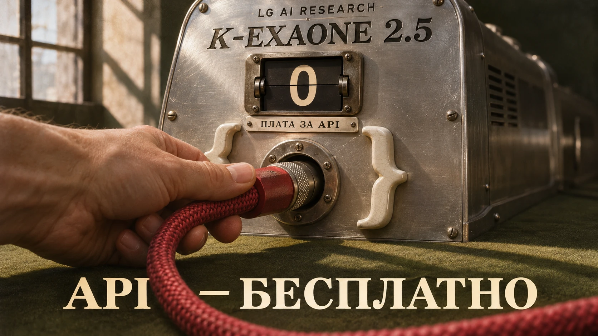

ХПИИ / Каталог / Продукты
K-EXAONE
Семейство моделей K-EXAONE.
Разработчик: LG AI Research
1 материалов в редакционной подборке
Публикации

10 ноября 2026 · Новости ИИLG открыла бесплатный API K-EXAONE 2.5 для разработчиков
LG AI Research открыла бесплатный API модели K-EXAONE 2.5 для разработчиков и компаний. API совместим с форматом OpenAI, действуют ограничения на частоту запросов.